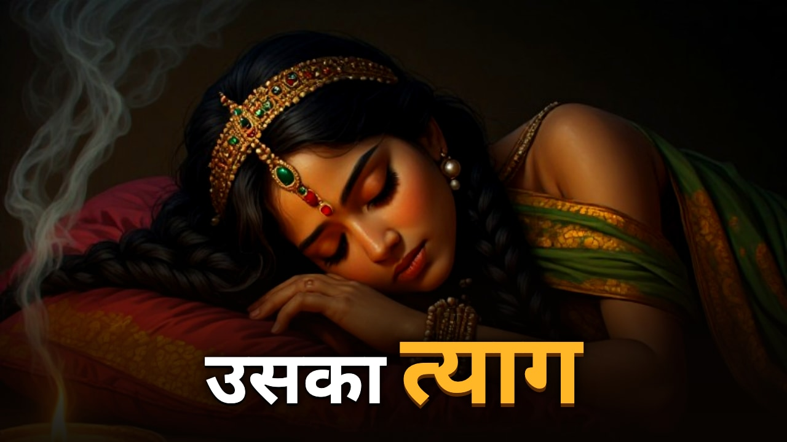
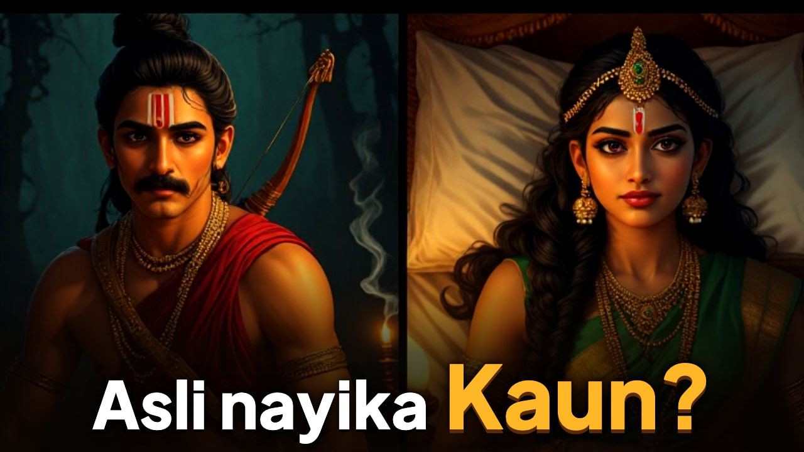

उर्मिला: जिसने लक्ष्मण की जगह 14 साल तक नींद ली
लोककथा के अनुसार, जब लक्ष्मण ने चौदह साल न सोने का संकल्प लिया, तब उनकी पत्नी उर्मिला ने उनके हिस्से की नींद ले ली।


वीडियो डाउनलोड · SRT · VTT · metadata.json · तथ्य-जाँच · YouTube पैकेज
शीर्षक विकल्प, विवरण, टैग, पिन किया कमेंट
शीर्षक विकल्प
- उर्मिला: जिसने लक्ष्मण की जगह 14 साल तक नींद ली
- लोककथा: जब उर्मिला लक्ष्मण के लिए 14 साल सोईं
- लक्ष्मण 14 साल जागे, तो उर्मिला ने क्या किया?
- उर्मिला की नींद: रामायण की भूली हुई लोककथा
- Urmila's 14-Year Sleep: Ramayana Folk Story | उर्मिला
विवरण
लोककथा के अनुसार, जब लक्ष्मण ने चौदह साल न सोने का संकल्प लिया, तब उनकी पत्नी उर्मिला ने उनके हिस्से की नींद ले ली।
उर्मिला सीता की बहन और लक्ष्मण की पत्नी थीं। लोककथा के अनुसार, जब लक्ष्मण ने वनवास में चौदह साल जागकर राम और सीता की रक्षा करने का संकल्प लिया, तब निद्रा देवी प्रकट हुईं। लक्ष्मण ने अपने हिस्से की नींद किसी और को देने का अनुरोध किया और उर्मिला ने यह जिम्मेदारी स्वीकार कर ली। कहते हैं कि वे चौदह वर्षों तक सोती रहीं।
यह कथा कहाँ से है?
यह कथा वाल्मीकि रामायण में नहीं है। यह लोकपरंपरा की कथा है: जैसे तेलुगु महिलाओं के रामायण-गीत ("उर्मिलादेवी निद्रा") और आधुनिक पुनर्कथन। इसका सबसे पुराना लिखित स्रोत हमें नहीं मिला। उर्मिला का लक्ष्मण की पत्नी और सीता की बहन होना वाल्मीकि रामायण (बालकांड) में है।
स्रोत
- Manushi 153: उर्मिला के विरह का तेलुगु गीत: https://manushi.in/the-song-of-urmilas-separation-andhra-womens-song-spotlights-ramayanas-neglected-urmila/
- वाल्मीकि रामायण, बालकांड सर्ग 71: https://www.valmikiramayan.net/utf8/baala/sarga71/bala_71_prose.htm
- वाल्मीकि रामायण, अयोध्याकांड सर्ग 51: https://www.valmikiramayan.net/utf8/ayodhya/sarga51/ayodhya_51_prose.htm
- Devdutt Pattanaik, "Lakshman's wife goes to sleep": https://devdutt.com/lakshmans-wife-goes-to-sleep/
- Wikipedia: Urmila: https://en.wikipedia.org/wiki/Urmila
इस वीडियो में: आवाज़ एक AI क्लोन की है, और चित्र AI से बने मंदिर-भित्तिचित्र शैली के चित्र हैं।
#उर्मिला #रामायण #लक्ष्मण #Shorts
टैग
उर्मिला, Urmila, लक्ष्मण, Lakshmana, रामायण, Ramayan, उर्मिला की नींद, Urmila nidra, निद्रा देवी, रामायण की अनसुनी कहानी, Ramayana untold story, Indian mythology, भारतीय पौराणिक कथा
#उर्मिला #रामायण #लक्ष्मण #Shorts
पिन किया हुआ कमेंट
एक ज़रूरी बात: उर्मिला की नींद की यह कथा लोककथा है, वाल्मीकि रामायण में इसका वर्णन नहीं है। उर्मिला का लक्ष्मण की पत्नी और सीता की बहन होना वाल्मीकि रामायण में है। स्रोत विवरण में दिए हैं। आपके अनुसार, इस कथा की असली नायिका कौन थीं? लक्ष्मण या उर्मिला?
कम्युनिटी पोल
इस कथा में आपको सबसे बड़ा त्याग किसका लगा?
उर्मिला की नींद · लक्ष्मण का जागना · दोनों का · यह कथा पहली बार सुनी